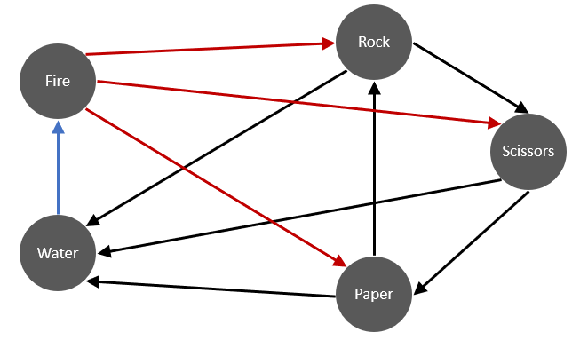
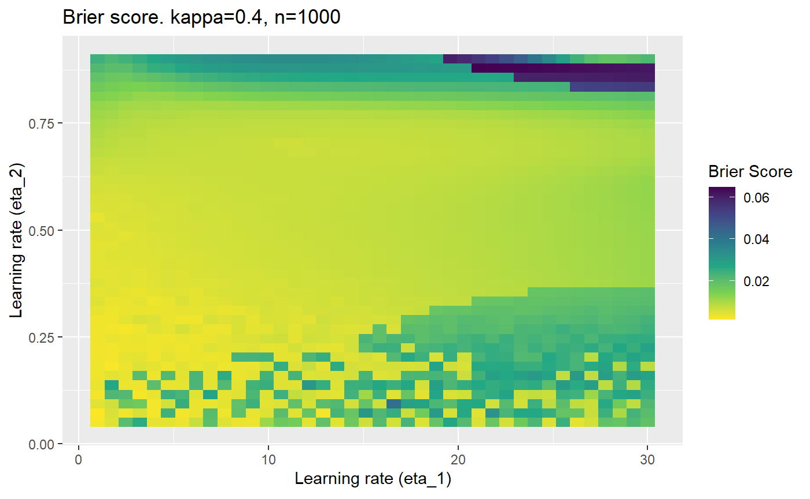
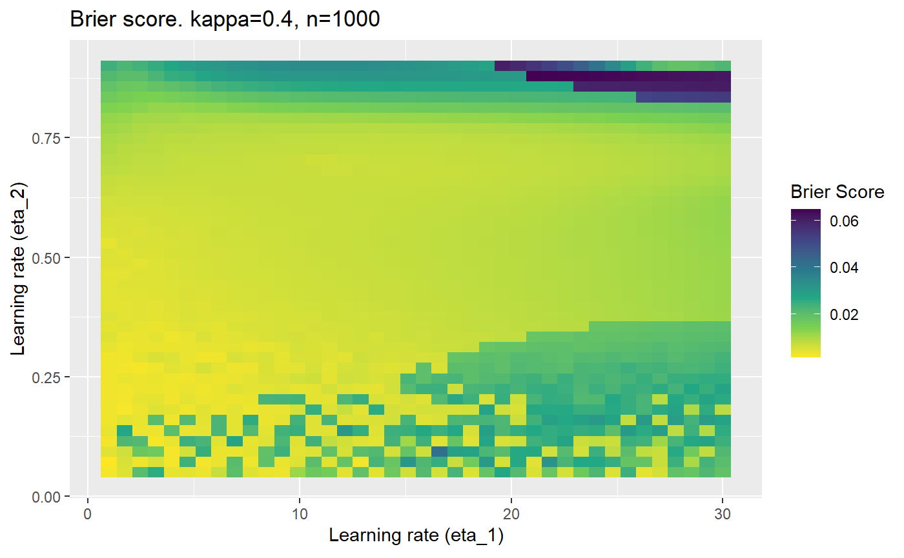

Impact of noisy or probabilistic outcomes in mELO models
David Lazaridis
2020-04-11
Source:vignettes/03_noise.Rmd
03_noise.RmdIntroduction
For the AFL data, we observed that the mELO model did not outperform the standard Elo model, despite the ability to model more complex interactions between teams. We suspect that the \(\textbf{C}\) matrix could not be adequately estimated in the presence of noisy environments with probabilistic outcomes and thus the adjustments to the base ratings only hurt prediction performance. In this setting, we use noisy to mean that the match outcomes come from a probability distribution and thus two teams could play each other twice in the exact same condition and results of the two matches could be very different.
An additional challenge for the evaluation of sporting clubs, is that their true abilities can change in time, but will be difficult to estimate due to random variations in their, and their oponents performances. An Elo model with a learning rate too small, may not track changes in undyling abilities fast enough, a learning rate too high will result in evaluations that are fit to the noise in recent performances.
In this document, we will attempt understand how well a mELO model can capture the dynamics of the rock-paper-scissors-fire-water game in a controlled environment where the agents never change in underlying ability but we can vary the amount of noise in the outcomes (or the distribution of outcome probabilities).
Method
We will perform a series of simulations to assess the estimation abilities of a mELO model with \(k=2\) where the ordinary probability of a win is modified to simulate the effect of having probabilistic outcomes.
The ordinary rock-paper-scissors-fire-water game (hereon referred to as rpsfw) has non-transitive interactions that are described by the following figure:

The direction of the arrows indicate which throw defeats the others with certainty i.e; throw \(i\) beats \(j\) with \(p_{ij}=1\) iff there is an edge from \(i\) to \(j\). In the simulations that follow, an edge from \(i\) to \(j\) will indicate a win probability of \(p^*_{ij}\) and a loss probability of \(q^*_{ij}=1-p_{ij}\). Ignoring cases when \(i=j\), the new success probabilities \(p^*_{ij}\) are defined such that \[ p^*_{ij} = \begin{cases} p_{ij} - \kappa & \text{if } p_{ij} = 1 \\ p_{ij} + \kappa & \text{if } p_{ij} = 0 \end{cases} \] where \(\kappa \in (0,0.5)\). We will denote this modified game as M-rpsfw. Also note that \(p^*_{ji} = q^*_{ij}\)
This adjustment is equivalent to controlling the Bit Error Rate (BER) which is simply the proportion of outcomes that are flipped, which in this case will simply be equal to \(\kappa\). Whilst the outcomes of each match \(y_{ij}\) in rpsfw were deterministically set to either 0 or 1, in M-rpsfw they are \[ \begin{align} y^*_{ij} &\sim \text{Bernoulli}(p^*_{ij}) &\text{ for } i \neq j, \\ y^*_{ij} &= 0.5 &\text{ for } i = j \end{align} \]
We can also think of changing the outcome probabilities as influencing the systems Signal to Noise Ratio: $$ = \
$$ where \(\kappa=0.5\) corresponds to no signal where it would be impossible to predict an outcome in advance (a coin flip) and \(\kappa = 0\) is a noiseless signal (rpsfw).
The simulations should be able to give us an understanding of how well a mELO model can capture the dynamics of the rpsfw game in the presence of noisy outcomes (M-rpsfw). Specifically, we are testing the ability of a mELO model to predict outcomes in a system that has non-transitive probabilistic interactions (as opposed to simple deterministic interactions in rpsfw).
The loss function \(\mathcal{B}_{\kappa, n}\) that will be used to measure the relative accuracy of the models will be calcuated for numerous combinations of error rates \(\kappa\) and number of training samples \(n\). It is calculated as \[ \mathcal{B}_{\kappa, n} = \frac{1}{R}\sum_{r=1}^{R} \big( \frac{1}{|\mathcal{T}|}\sum_{\mathcal{m}_{ij}\in \mathcal{T}}(p^*_{ij} - \hat p_{ij})^2 \big) \] where
- \(r\) indexes the simulation replication.
- \(R\) is the number of simulation replications.
- \(\mathcal{m}_{ij}\) is a match between \(i\) and \(j\).
- \(\mathcal{T}\) is the set of matches in the test data.
- \(|mathcal{T}|=25\) is the number of matches in \(\mathcal{T}\) (all possible distinct matches).
- \(p^*_{ij}\) is win probability for \(i\) over \(j\).
- \(\hat p_{ij}\) is the mELO estimate of \(p^*_{ij}\).
This loss function is essentially a Brier Score average over simulation replications. We use multiple replications due to the randomness in the initialisation of the \(\textbf{C}\) matrix for the mELO model.
The data
Below we give a sample of the data with varying noise/error rates, where draws get randomly assigned to a win or loss with equal probability:
# Initial set up
library(dplyr)
library(ggplot2)
library(mELO)
set.seed(31337)
rpsfw_df %>%
mutate(
outcome_k000 = add_noise_to_outcomes(outcome, error_prob = 0.00),
outcome_k010 = add_noise_to_outcomes(outcome, error_prob = 0.10),
outcome_k050 = add_noise_to_outcomes(outcome, error_prob = 0.50)
) %>%
filter(throw_1 != throw_2) %>%
sample_n(10) %>%
knitr::kable()| time_index | throw_1 | throw_2 | outcome | outcome_k000 | outcome_k010 | outcome_k050 |
|---|---|---|---|---|---|---|
| 287 | WATER | ROCK | 0 | 0 | 0 | 0 |
| 71 | SCISSORS | PAPER | 1 | 1 | 1 | 1 |
| 122 | PAPER | WATER | 1 | 1 | 1 | 1 |
| 164 | SCISSORS | PAPER | 1 | 1 | 1 | 1 |
| 285 | WATER | ROCK | 0 | 0 | 0 | 1 |
| 342 | WATER | PAPER | 0 | 0 | 1 | 0 |
| 46 | SCISSORS | PAPER | 1 | 1 | 1 | 0 |
| 297 | PAPER | WATER | 1 | 1 | 1 | 1 |
| 283 | ROCK | FIRE | 0 | 0 | 0 | 1 |
| 272 | SCISSORS | ROCK | 0 | 0 | 0 | 1 |
outcome is the original noiseless outcome, outcome_k<###> are outcomes drawn from \(\text{Bernoulli}(p^*_{ij})\) where \(p^*_{ij}\) is a function of \(kappa\) (error_prob). We observe that outcome_k010 has very few errors whilst outcome_k50 is random.
Before we begin the simulations, we have to do some work to prepare the data:
# Increase sample size of the rpsfw data
rpsfw_df_mod <- do.call(
"rbind",
replicate(20, rpsfw_df, simplify = FALSE)
)
# randomise and re-index
rpsfw_df_mod <- rpsfw_df_mod %>%
sample_frac(1, replace=FALSE) %>%
mutate(time_index = 1:n())
# Generate the samples we will test against, all distinct combinations
test_df <- rpsfw_df_mod %>%
distinct(
throw_1,
throw_2,
.keep_all = TRUE
) %>%
arrange(throw_1, throw_2) %>%
mutate(time_index = 1:n())Simulations
This is where we would have liked to present some beautiful plots showing demonstrating things like:
- As \(\kappa \rightarrow 0.5\) the harder it is for the model to correctly model the system (according to the our loss function \(\mathcal{B}_{\kappa, n}\)).
- Larger training samples (\(n\)) improves the \(\mathcal{B}_{\kappa, n}\) in high SNR scenarios
- etc
However, we have found that the performance of the mELO models are extremely sensitive to:
- The hyperparameters, learning rates \(\eta_1\) and \(\eta_2\).
- The initialisation of the \(\textbf{C}\) matrix.
- The number of training samples.
Furthermore, the error surfaces (both logistic loss or \(\mathcal{B}_{\kappa, n}\)) are typically not continuous or concave for random initialisations of \(\textbf{C}\), making it very difficult to optimise for the best set of \((\eta_1, \eta_2)\)[^1] for each combination of \(\kappa\) and\(n\). The default learning rates \((\eta_1=16, \eta_2=1)\) used by Balduzzi, et al. (2018) do not appear to be universally appropriate, in fact \(\eta_2 \approx 1\) often results in poor estimates. For these reasons, it is very difficult to systematically evaluate the mELO models under varying signal to noise ratios.
[^1] Even initialising the models with the \(\textbf{C}\) matrix obtained from an accurate model built on the regular rpsfw does not seem to make things much better.
The code below produces a series of error (\(\mathcal{B}_{\kappa, n}\)) plots for various combinations of \(\kappa, n, \eta_1, \eta_2\) with both random initialisation for \(\textbf{C}\) for each fit, and fixing it to be equal at \(t=0\) for each model fit. It takes a while to run.
# Data param combinations will iterate through
params_map <- expand.grid(
n = c(250, 500, 1000, 2000),
kappa = c(0.01, 0.05, 0.1, 0.2, 0.3, 0.4)
)
# Learning rates
eta_1_vec <- seq(1, 30, length.out = 40)
eta_2_vec <- seq(0.05, 0.9, length.out = 40)
# Fixed seed for C matrix init
fix_seed_for_c_matrix_init <- FALSE
# Store results/plots in list
plot_list <- list()
# Loop
for (k in 1:nrow(params_map)){
# Get data ready for given n and kappa
set.seed(231)
n <- params_map$n[k]
kappa <- params_map$kappa[k]
current_rpsfw_df_mod <- rpsfw_df_mod %>%
mutate(
outcome = add_noise_to_outcomes(outcome, error_prob = kappa),
outcome = ifelse(throw_1 == throw_2, 0.5, outcome)
) %>%
slice(1:n)
current_test_df <- test_df %>%
mutate(
outcome = ifelse(outcome == 1, 1-kappa, outcome),
outcome = ifelse(outcome == 0, kappa, outcome)
)
# Function to get Brier or logloss errors
error_calc <- function(hyperparams){
if(fix_seed_for_c_matrix_init){set.seed(3432)}
model <- mELO(
current_rpsfw_df_mod,
# init_c_mat = good_c_mat,
k = 2,
eta_1 = hyperparams[1],
eta_2 = hyperparams[2],
save_history = FALSE
)
preds <- predict(
model,
current_test_df
)
error <- mean((current_test_df$outcome - preds)^2)
#error <- logloss(preds, current_test_df$outcome)
error
}
# Generate data for plot
error_mat <- matrix(
NA,
nrow = length(eta_1_vec),
ncol = length(eta_2_vec)
)
# Begin loop
for (i in 1:length(eta_1_vec)){
for(j in 1:length(eta_2_vec)){
error_mat[i,j] <- error_calc(
c(eta_1_vec[i], eta_2_vec[j])
)
}
}
# fix labels
rownames(error_mat) <- eta_1_vec
colnames(error_mat) <- eta_2_vec
# Make data frame for plotting
error_mat_df <- error_mat %>%
as.data.frame() %>%
mutate(eta_1 = eta_1_vec) %>%
tidyr::gather(
"eta_2",
"value",
-eta_1
) %>%
as_tibble() %>%
mutate(eta_2 = as.numeric(eta_2))
# construct error plot
error_plot <- error_mat_df %>%
ggplot(
aes(
x = eta_1,
y = eta_2,
fill = value
)
) +
geom_tile() +
scale_fill_viridis_c(direction = -1, "Brier Score") +
ggtitle(
paste0("Brier score. kappa=", kappa, ", n=", n)
) +
xlab(expression("Learning rate (eta_1)")) +
ylab(paste0("Learning rate (eta_2)"))
# store plot
plot_list_2[[k]] <- error_plot
} 
Conclusion
Care must be taken when optimising hyperparameters for mELO models, especially in the presense of probabilistic outcomes. Some ideas that could be implemented to improve the reliability of optimising mELO models:
- Better initialisation of the \(\textbf{c}\) vectors.
- Regularisation for the \(\textbf{c}\) vectors.
- Momentum for the \(\textbf{c}\) vectors.